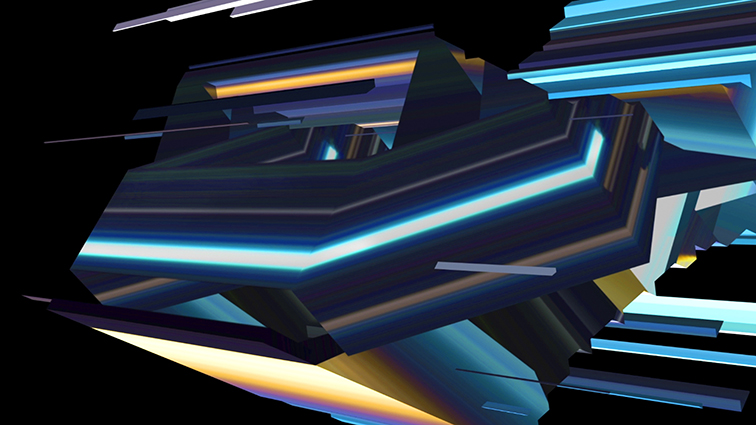

SOL DEL RIO
SOL DEL RIO
Luminar
VIDEO FULL HD CON SONIDO STEREO. DURACIÓN 3:00

Basada en el registro en video de una tormenta eléctrica, del Río se propone un despiece estético del fenómeno, a partir del cual construye un sistema de reglas para que las piezas que compusieron la imagen de la tormenta confluyan en un nuevo orden. La información estética del fenómeno natural es capturada y luego sometida a cierta lógica industrial, donde la percepción de la artista se entrelaza con el lenguaje de los softwares que utiliza en su búsqueda. El resultado es a primera vista una abstracción geométrica en que el efecto de luz ocupa un rol central: en profundidad una especie de mecanismo entre los planos del video, funciona para componer y descomponer la luz capturada, en el ciclo de una fuente.
Sol del Río (Argentina, 1981) Investiga la interfaz como paisaje visual, la simultaneidad espacial-temporal y la intersección entre naturaleza y tecnología. Utiliza diferentes medios y softwares trabajando con sonido, video, animación, pintura y performance. Entre sus obras/exhibiciones pueden destacarse MonsterShine, Live A/V, Mutek SAT Montreal CAN 2011, Resonancia, álbum y Live A/V, ArtLab Cúpula CCK BA ARG 2016.
www.soldelriomv.wixsite.com/soldelrio